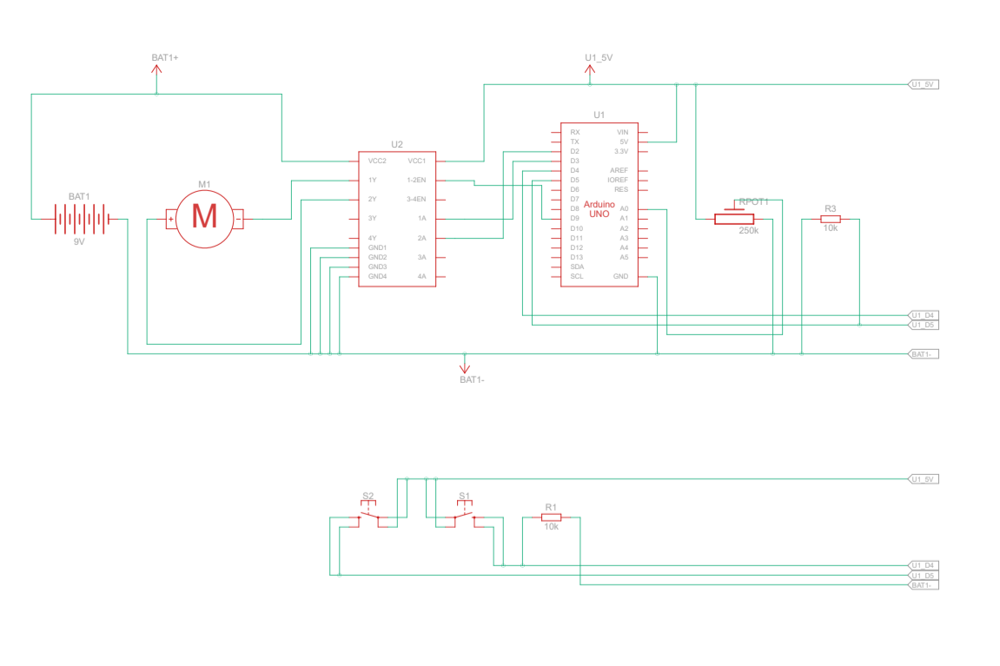
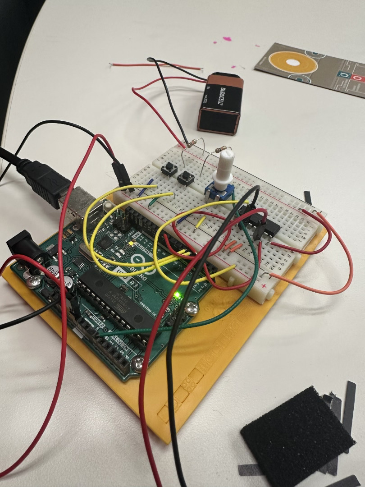

Arduino HW 10 - Zoetrope
IGME 470
The Zoetrope assignment introduces motor control using an H-bridge motor driver. This project builds on the motorized pinwheel assignment by adding directional control and adjustable speed using a potentiometer. The H-bridge allows the motor to spin in both directions, and two pushbuttons control the motor's on/off state and direction.
This assignment is important because it teaches us how to use an H-bridge to control DC motors, which is valuable for robotics and many other applications. The Arduino tutorial provided a clear explanation of what the pins are for and how to wirte everything up, which made it very approachable.


The parts used:
- 1x Arduino Uno R3
- 2x Pushbuttons
- 1x 250 kΩ Potentiometer
- 1x DC Motor
- 1x 9V Battery
- 1x H-bridge Motor Driver
- 2x 10 kΩ Resistors
Click to view full Arduino code
const int controlPin1 = 2; // connected to pin 7 on the H-bridge
const int controlPin2 = 3; // connected to pin 2 on the H-bridge
const int enablePin = 9; // connected to pin 1 on the H-bridge
const int directionSwitchPin = 4; // connected to the switch for direction
const int onOffSwitchStateSwitchPin = 5; // connected to the switch for turning the motor on and off
const int potPin = A0; // connected to the potentiometer's output
// create some variables to hold values from your inputs
int onOffSwitchState = 0; // current state of the on/off switch
int previousOnOffSwitchState = 0; // previous position of the on/off switch
int directionSwitchState = 0; // current state of the direction switch
int previousDirectionSwitchState = 0; // previous state of the direction switch
int motorEnabled = 0; // Turns the motor on/off
int motorSpeed = 0; // speed of the motor
int motorDirection = 1; // current direction of the motor
void setup() {
// initialize the inputs and outputs
pinMode(directionSwitchPin, INPUT);
pinMode(onOffSwitchStateSwitchPin, INPUT);
pinMode(controlPin1, OUTPUT);
pinMode(controlPin2, OUTPUT);
pinMode(enablePin, OUTPUT);
// pull the enable pin LOW to start
digitalWrite(enablePin, LOW);
}
void loop() {
// read the value of the on/off switch
onOffSwitchState = digitalRead(onOffSwitchStateSwitchPin);
delay(1);
// read the value of the direction switch
directionSwitchState = digitalRead(directionSwitchPin);
// read the value of the pot and divide by 4 to get a value that can be
// used for PWM
motorSpeed = analogRead(potPin) / 4;
// if the on/off button changed state since the last loop()
if (onOffSwitchState != previousOnOffSwitchState) {
// change the value of motorEnabled if pressed
if (onOffSwitchState == HIGH) {
motorEnabled = !motorEnabled;
}
}
// if the direction button changed state since the last loop()
if (directionSwitchState != previousDirectionSwitchState) {
// change the value of motorDirection if pressed
if (directionSwitchState == HIGH) {
motorDirection = !motorDirection;
}
}
// change the direction the motor spins by talking to the control pins
// on the H-Bridge
if (motorDirection == 1) {
digitalWrite(controlPin1, HIGH);
digitalWrite(controlPin2, LOW);
} else {
digitalWrite(controlPin1, LOW);
digitalWrite(controlPin2, HIGH);
}
// if the motor is supposed to be on
if (motorEnabled == 1) {
// PWM the enable pin to vary the speed
analogWrite(enablePin, motorSpeed);
} else { // if the motor is not supposed to be on
//turn the motor off
analogWrite(enablePin, 0);
}
// save the current on/off switch state as the previous
previousDirectionSwitchState = directionSwitchState;
// save the current switch state as the previous
previousOnOffSwitchState = onOffSwitchState;
}
The H-bridge motor driver controls the DC motor's direction and speed in this project. The H-bridge's pins correspond to a variety of signals. The directional rotation works by switching the polarity of the voltage applied to the motor - when pin1 is HIGH and pin2 is LOW, the motor spins in one direction; reversing these states reverses the motor direction.
The potentiometer provides variable speed control through PWM (Pulse Width Modulation) on the enable pin. One pushbutton toggles the motor on/off, while the other toggles the direction. This demonstrates important concepts like state management and H-bridge motor control that are fundamental to robotics and automation projects.
Demo